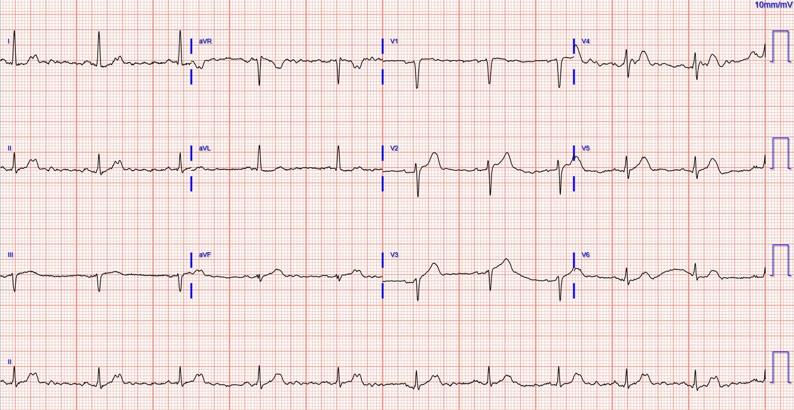
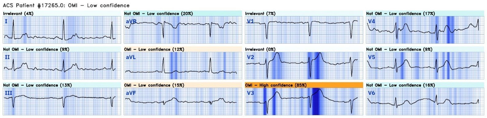
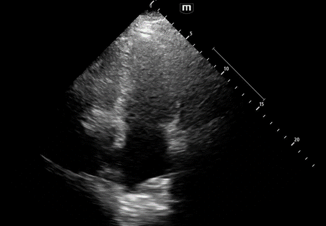
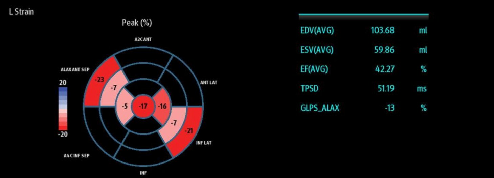
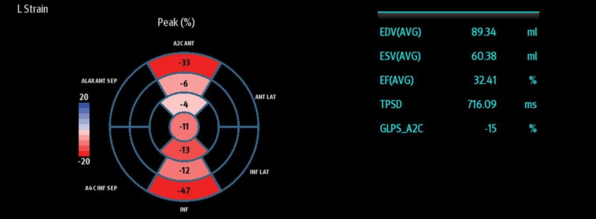
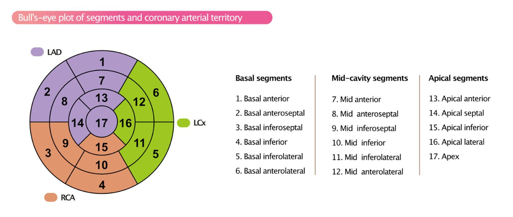
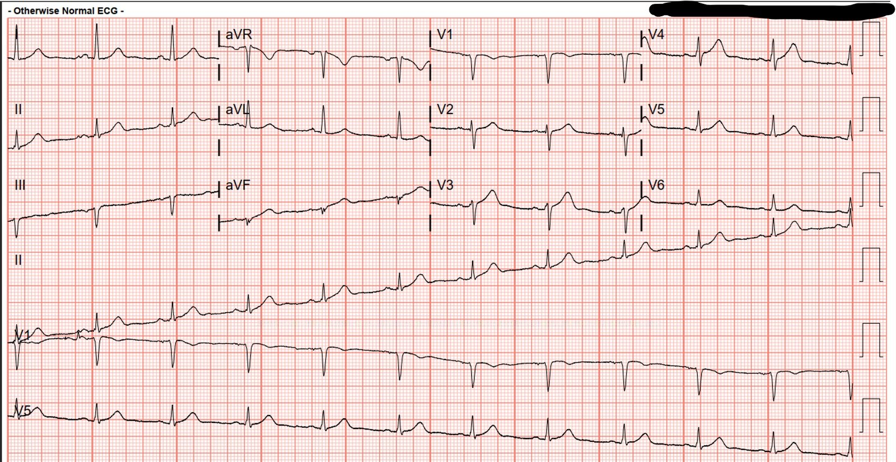
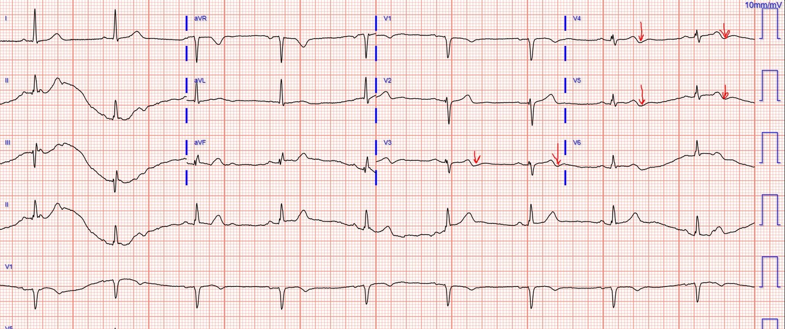
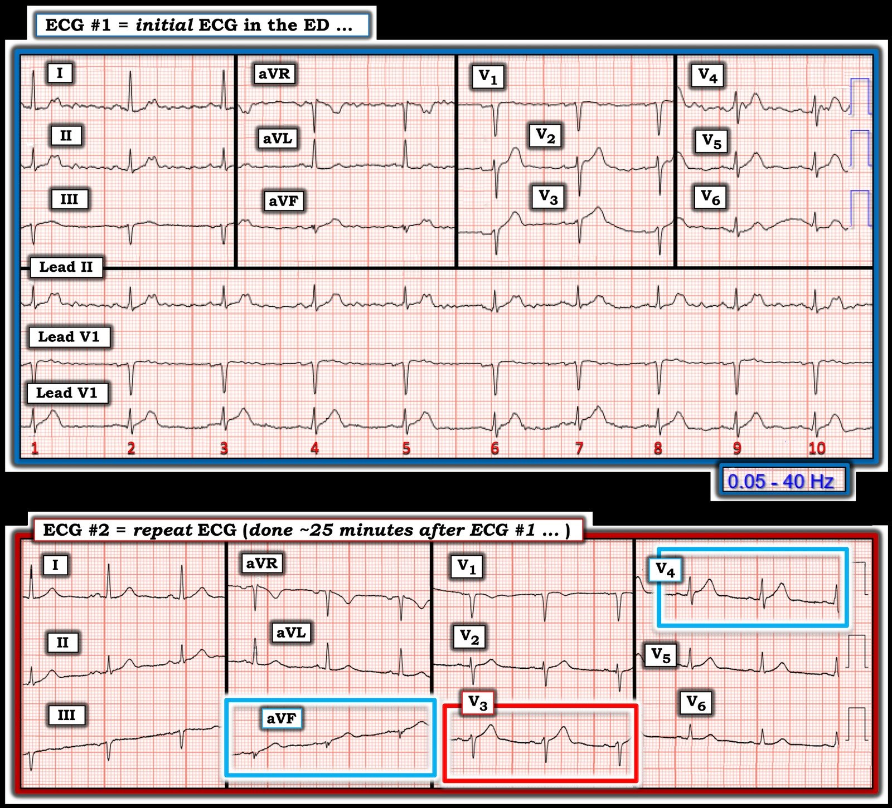

18/05/2024 — Tái cực sớm hay OMI thành trước?
Bản dịch tiếng Việt của bài "Early repol or anterior OMI?" – Dr. Smith’s ECG Blog. Giữ nguyên toàn bộ 11 hình ảnh của bản gốc.
Đau ngực – Tái cực sớm lành tính hay OMI?
Tác giả: BS. Destiny Folk, BS. Adam Engberg và BS. Vitaliy Belyshev
Một người đàn ông ngoài 60 tuổi có tiền sử tăng huyết áp, đái tháo đường típ 2, béo phì và rối loạn lipid máu đến khoa cấp cứu để được đánh giá đau ngực. Ông kể có cảm giác đè ép sau xương ức lan ra cánh tay trái, khởi phát lúc đang làm việc vài giờ trước khi đến viện và đã đỡ phần nào so với lúc khởi phát. Ông cho biết cha ông mất vì nhồi máu cơ tim khi mới ngoài 50 tuổi, điều này thúc ông đến khoa cấp cứu.
Đây là điện tâm đồ đầu tiên lúc 13:17; hồ sơ bệnh nhân không có điện tâm đồ cũ nào để so sánh:


Điện tâm đồ cho thấy nhịp xoang và hình thái QRS tương đối bình thường. Có các dấu hiệu đáng lo ngại cho OMI trước bên, gồm ST chênh lên và sóng T tối cấp ở các chuyển đạo trước bên, rõ nhất ở V2-V5, cũng như sóng T tối cấp ở các chuyển đạo dưới. Ngoài ra còn có tăng tiến sóng R bất thường, với sóng R thoái lui từ chuyển đạo V2 sang V3 (giả định các điện cực đặt đúng vị trí). Điện tâm đồ này rất đáng lo ngại cho tắc LAD dù không đạt tiêu chuẩn STEMI.
Nếu nhìn bản ghi này mà bạn không chắc đây là ST chênh lên biến thể bình thường ở V2-V4 (tái cực sớm) hay tắc động mạch vành LAD kín đáo, bạn có thể dùng Công thức 4 biến đơn giản hóa của BS. Smith:
–Công thức này áp dụng được cho các điện tâm đồ có ST chênh lên ít nhiều ở các chuyển đạo V2-V4 (phải có ST chênh lên ít nhất 1 mm ở ít nhất một trong 3 chuyển đạo này)
–Công thức này xét đến:
1) QTc (máy tính đo)
2) biên độ sóng R, tính bằng mm, ở chuyển đạo V4
3) mức ST chênh lên đo tại thời điểm 60 mili giây sau điểm J, so với đoạn PR, tính bằng milimét, ở chuyển đạo V3.
4) Cuối cùng, đo biên độ QRS ở V2 (cả sóng R và sóng S).
Từ các số đo này, công thức tính ra một giá trị. Nếu giá trị đó lớn hơn 18,2, nó khá nhạy và đặc hiệu cho tắc LAD.
Bạn có thể tìm các biến dùng để tính giá trị này trên MDCalc tại đây: https://www.mdcalc.com/calc/10079/subtle-anterior-stemi-calculator-4-variable
Dùng Công cụ tính STEMI thành trước kín đáo (4 biến) của BS. Smith, giá trị thu được lớn hơn 18,2, đáng lo ngại cho tắc LAD.
Chúng tôi đo được:
1) QTc = 386 ms
2) Biên độ QRS ở V2 = 12 mm (QRS ở V2)
3) Biên độ sóng R ở V4 = 5 mm
4) STE 60 V3 = ST chênh lên 2,0 mm tại thời điểm 60 ms sau điểm J ở V3
Giá trị công thức = 19,0.
Queen of Hearts đọc điện tâm đồ này là OMI – Độ tin cậy thấp


Bấm vào đây để đăng ký quyền truy cập QoH
Các bác sĩ điều trị bệnh nhân này lo ngại về bệnh sử và điện tâm đồ ban đầu, nên tiếp theo đã làm siêu âm tim tại giường. POCUS cho thấy rối loạn vận động thành trước bên, với giảm động rõ nhất ở mỏm.
Siêu âm tim đánh dấu mô (Speckle Tracking Echocardiography) có thể là một công cụ hỗ trợ hữu ích khác. Trên máy Mindray TEX, sức căng dọc toàn bộ (global longitudinal strain) được xác định là nhỏ hơn hoặc bằng -16%. Mặt cắt 4 buồng từ mỏm thể hiện rõ nhất rối loạn vận động thành đáng kể ở thành trước vùng mỏm. Các phân đoạn thành trước vùng mỏm và thành vách được xác định có kiểu sức căng bất thường đáng kể, như thể hiện trên các biểu đồ hồng tâm (bullseye) dưới đây:







Về cơ bản, siêu âm tim đánh dấu mô đo xem các ‘điểm ảnh’ (pixel) của cơ tim di chuyển được bao xa trong các chu chuyển tim. Sức căng dương nghĩa là kéo dài, còn sức căng âm là co ngắn. Trên máy siêu âm của chúng tôi, máy TEX, sức căng bình thường được xem là từ -18 % trở lên (âm hơn). Con số càng gần 0 thì các sợi cơ tim di chuyển càng ít. Máy tính dùng ba trục của tim: (dọc, chu vi và xuyên tâm.
Đáng tiếc là tôi chỉ thu được 2/3 biểu đồ hồng tâm hoàn chỉnh, về cơ bản là bản đồ cơ tim cùng với dòng máu tương ứng (xem bên dưới). Vitaliy đã quay lại xem có thể bổ sung phần vận động còn thiếu của thành trước bên và thành dưới vách hay không, nhưng không được.
Ở bệnh nhân này, các phân đoạn (7 và 13; thành trước) và (14 và 8; thành trước vách) cho thấy sức căng dọc bất thường đáng kể, với giá trị âm (co ngắn ít hơn bình thường, tức là không di chuyển).


Hình minh họa dưới đây đối chiếu dòng máu với các phân đoạn trên biểu đồ hồng tâm. Lưu ý LAD (màu tím) cấp máu cho tất cả các phân đoạn có sức căng bất thường (7,8,13,14). Kiểu sức căng này củng cố chẩn đoán tắc LAD đoạn giữa và đoạn xa!!
Các vòng tròn đỏ tương ứng với những vùng được xác định có sức căng cơ tim bất thường đáng kể.
BS. Smith và các tác giả khác đã cho thấy giá trị của siêu âm tim đánh dấu mô đo sức căng trong báo cáo ca bệnh này:
Diagnosis of acute coronary occlusion in patients with non–STEMI by point-of-care echocardiography with speckle tracking (Chẩn đoán tắc động mạch vành cấp ở bệnh nhân non-STEMI bằng siêu âm tim tại giường có đánh dấu mô)
Điện tâm đồ ghi lại:


Vài giờ sau, chụp mạch vành cho thấy:
Tổn thương thủ phạm ở LAD đoạn giữa, hẹp 75%, TIMI 3, có huyết khối, nhiều khả năng là nguồn gây thuyên tắc làm tắc 100% LAD đoạn xa, với dòng chảy TIMI 0. Tổn thương thủ phạm ở LAD đoạn giữa đã được đặt stent. Báo cáo không nói rõ có lấy huyết khối ở chỗ tắc LAD đoạn xa hay không.
Dưới đây là điện tâm đồ ghi sau can thiệp tại phòng thông tim:


Điện tâm đồ này phù hợp với tái tưới máu, dựa trên sóng T đảo ngược ở V2-V6 như các mũi tên đỏ chỉ ra.
Troponin I độ nhạy cao (hs troponin I) của bệnh nhân tăng từ 1.709 lên 24.860 ng/L, và không được theo dõi tới đỉnh. Bệnh nhân xuất viện khoảng 24 giờ sau can thiệp.
Chẩn đoán lúc ra viện là cái thuật ngữ vô giá trị và vô nghĩa ấy: “NSTEMI”.
Lẽ ra chẩn đoán lúc ra viện phải là “OMI”
Những điểm cần học
Luôn phải nhìn sóng T trong tương quan với QRS, và nếu sóng T trông quá lớn so với QRS, bạn nên lo ngại OMI. Sóng T đảo ngược ở vùng OMI phù hợp với tái tưới máu, như minh họa dưới đây. Sóng T đảo ngược có thể tồn tại nhiều ngày trước khi điện tâm đồ của bệnh nhân trở về như nền.
Hãy dùng Công cụ tính STEMI thành trước kín đáo (4 biến) để phân biệt ST chênh lên biến thể bình thường (tái cực sớm lành tính) với STEMI thành trước. Công thức này có trên MDCalc tại đường link sau: https://www.mdcalc.com/calc/10079/subtle-anterior-stemi-calculator-4-variable
Rối loạn vận động thành và siêu âm đánh dấu mô (speckle tracking) có thể là công cụ hỗ trợ hữu ích để củng cố các dấu hiệu điện tâm đồ kín đáo.
QOH lẽ ra đã có thể giúp nhận biết OMI tốt hơn trong ca này.
Đăng ký quyền truy cập Queen of Hearts tại đây

===================================
BÌNH LUẬN CỦA TÔI, bởi KEN GRAUER, MD (18/5/2024):
===================================
“Tin tốt” trong ca hôm nay — là các bác sĩ điều trị đã nhanh chóng nhận ra các bất thường điện tâm đồ trên bản ghi đầu tiên — ghi nhận được các dấu hiệu siêu âm tim bất thường ủng hộ nghi ngờ OMI do LAD — và tạo điều kiện thông tim kịp thời, trong đó PCI thành công đã mang lại kết cục tốt.
- Tôi xin bổ sung vài suy nghĩ về 2 bản ghi đầu tiên trong ca hôm nay.
Xem lại điện tâm đồ đầu tiên (mà tôi đã đưa lại trong Hình 1) — bản ghi này đơn giản là không dễ đọc. (LƯU Ý: Điện tâm đồ tôi trình bày dưới đây trong Hình 1 là bản ghi duy nhất tôi được xem lúc đầu — điều này minh họa những thách thức khi đọc các bản ghi chất lượng chưa tối ưu. Tôi chưa từng thấy phiên bản chất lượng tốt hơn).
- Có rất nhiều nhiễu đường nền gây khó khăn cho việc đánh giá điện tâm đồ #1. Nhịp nền là nhịp xoang. Dù vậy — tôi đã mất một lúc mới gạn lọc được qua những dao động đường nền có mặt khắp nơi trên điện tâm đồ đầu tiên này, cho tới khi cuối cùng nhận ra được rằng một sóng dương biên độ thấp (sóng P xoang) quả thật xuất hiện đều đặn trước mỗi phức bộ trong 10 phức bộ QRS ở dải nhịp chuyển đạo II dài.
- Tác động gây nhiễu loạn của nhiễu này có lẽ thấy rõ nhất khi nhìn vào hình dạng ST-T khác nhau của 2 phức bộ QRS mà ta thấy ở các chuyển đạo V2 và V3. Câu hỏi chẩn đoán chính là liệu điện tâm đồ đầu tiên này có chẩn đoán được OMI cấp do LAD hay không — và 2 chuyển đạo trước này cung cấp thông tin then chốt cho câu hỏi đó. Nhưng — Sóng ST-T nào mới là sóng “đúng”? (tức là sóng ST-T của nhát #6 ở các chuyển đạo V2,V3 — hay — của nhát #7 ở các chuyển đạo này)?
- Dù vậy, quả thật có vẻ có một chi “thủ phạm” gây ra phần lớn (gần hết) nhiễu — dường như xuất phát từ chi RA, vì các dao động đường nền lớn nhất ở các chuyển đạo I, II và aVR — có mặt nhưng nhỏ hơn ở các chuyển đạo aVL và aVF — và không có ở chuyển đạo III (Xem phần Bình luận của tôi ở cuối trang trong bài ngày 18 tháng Hai năm 2024 trên Dr. Smith’s ECG Blog để ôn lại cách xác định nhanh chi “thủ phạm”). Vì vậy — Đáng để nhìn nhanh bệnh nhân xem điện cực RA có bị lỏng không? — hoặc — xem có hoạt động nào khác của bệnh nhân có thể “khắc phục được” giải thích cho nhiễu hay không.
- LƯU Ý: Cài đặt bộ lọc cho điện tâm đồ đầu tiên trong ca hôm nay — là 0,05–40 Hz (góc dưới bên phải của Hình 1). Cài đặt này tương ứng với chế độ theo dõi (monitor) — là cài đặt thường dùng để giúp giảm nhiễu và trôi đường nền. Tuy nhiên, chế độ theo dõi kém chính xác hơn trong đánh giá hình thái sóng ST-T — so với cài đặt bộ lọc 0,05–150 Hz được khuyến nghị cho chế độ chẩn đoán.
- Mặc dù rõ ràng có những lúc nhiễu do cử động quá nhiều khiến không thể dùng cài đặt 0,05–150 Hz — nhưng nên hiểu được tác động tiềm tàng mà cài đặt bộ lọc có thể gây ra, và tốt nhất là thử trước cài đặt tối ưu 0,05–150 Hz khi trọng tâm là phân tích sóng ST-T ở bệnh nhân đau ngực (Xem phần Bình luận của tôi trong bài ngày 13 tháng Một năm 2024 để biết thêm về cài đặt bộ lọc).
Các dấu hiệu điện tâm đồ trên bản ghi đầu tiên:
Như các BS. Folk, Engberg, Belyshev và Meyers đã nêu — Dù có nhiễu, điện tâm đồ #1 vẫn nổi bật với sóng T tối cấp ở một số chuyển đạo trước tim — tăng tiến sóng R bất thường — và sóng T lớn không tương xứng ở chuyển đạo aVF.
- Điểm MẤU CHỐT: Dù các vấn đề kỹ thuật có gây khó khăn đến mức nào cho việc đánh giá hình dạng ở các chuyển đạo trước tim — tôi cho rằng các dấu hiệu bất thường ở chuyển đạo chi trên điện tâm đồ #1 đủ thuyết phục để cho thấy một quá trình cấp tính đang diễn ra, vì: i) Không thể nghi ngờ gì về hình dạng “quá đầy đặn” không tương xứng của sóng T ở chuyển đạo aVF (so với phức bộ QRS rất nhỏ ở chuyển đạo này); ii) Dù không chênh lên — đoạn ST dạng vòm ở chuyển đạo III rõ ràng là bất thường, và càng củng cố thêm tính tối cấp thấy ở chuyển đạo aVF kế bên; và, iii) Đoạn ST thẳng đuỗn kèm ST chênh xuống nhẹ-nhưng-thật ở chuyển đạo aVL, trong bối cảnh bệnh nhân này mới đau ngực — đã thỏa mãn hình ảnh ST-sóng T soi gương “thần kỳ” giữa chuyển đạo III và aVL, vốn gợi ý rất mạnh một OMI đang diễn ra.
- Điểm bổ sung: Với mức độ nhiễu trên điện tâm đồ #1 — việc yêu cầu ghi lại điện tâm đồ ngay lập tức có lẽ đã làm rõ hơn bức tranh điện tâm đồ.


Điện tâm đồ ghi lại:
Điện tâm đồ thứ 2 được ghi 25 phút sau đó.
- Nhiễu đã biến mất! Dù có trôi đường nền — các phức bộ QRST rõ ràng và đồng nhất giờ đây cho phép diễn giải chính xác.
- Ở bệnh nhân mới đau ngực (CP – Chest Pain) này — chuyển đạo V3 lập tức thu hút sự chú ý (trong hình chữ nhật ĐỎ trên điện tâm đồ #2) — vì sóng T tối cấp (rõ ràng cao hơn, “béo” hơn ở đỉnh và rộng hơn ở đáy so với mức đáng có — xét theo kích thước nhỏ của QRS ở chuyển đạo này).
- Xét đến sóng T bất thường ở chuyển đạo V3 — sóng T ở chuyển đạo V4 kế bên cũng tối cấp (đầy đặn hơn mức đáng có — trong hình chữ nhật XANH ở chuyển đạo này).
- Sóng T chắc chắn bất thường (không tương xứng) thứ 3 trên điện tâm đồ #2 — là ở chuyển đạo aVF (trong hình chữ nhật XANH ở chuyển đạo này).
NHẬN ĐỊNH:
Dù hiểu rõ khó khăn kỹ thuật vốn có khi đánh giá điện tâm đồ #1 đầy nhiễu — dường như có thay đổi động khi so với điện tâm đồ #2 ghi lại 25 phút sau đó.
- ST-sóng T ở chuyển đạo V2 đã trở về bình thường trên điện tâm đồ #2.
- Dù khó nhận định (vì nhiễu trên điện tâm đồ #1) đâu là thay đổi “thật” ở chuyển đạo V3,V4 giữa 2 bản ghi — sóng T ở chuyển đạo V5,V6 rõ ràng trông bớt cấp tính hơn trên bản ghi lại.
- Cũng ghi nhận những cải thiện tinh tế ở các chuyển đạo chi của điện tâm đồ #2. Bao gồm: i) Đoạn ST ở chuyển đạo III dẹt đi trên bản ghi lại; ii) ST chênh xuống nhẹ ở chuyển đạo aVL đã hết; và, iii) Kích thước tương đối của sóng T tối cấp ở chuyển đạo aVF giảm đi.
- ĐIỀU CỐT LÕI: Ở bệnh nhân có xác suất OMI cao này, mới đau ngực — 2 điện tâm đồ liên tiếp này có giá trị chẩn đoán LAD OMI cấp, với nhu cầu thông tim sớm được khẳng định bởi thay đổi ST-sóng T động giữa 2 bản ghi. NẾU triệu chứng đã giảm vào thời điểm (25 phút sau) ghi điện tâm đồ #2 — sự cải thiện các dấu hiệu điện tâm đồ mà chúng ta thấy giữa 2 bản ghi này gợi ý động mạch “thủ phạm” đang bắt đầu tái tưới máu tự phát.